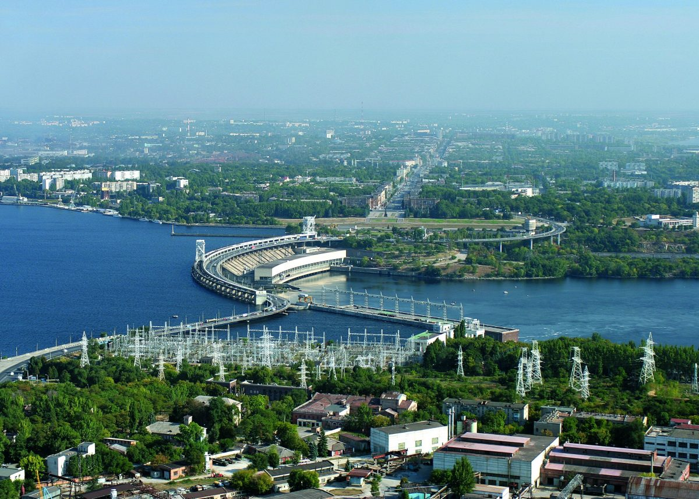
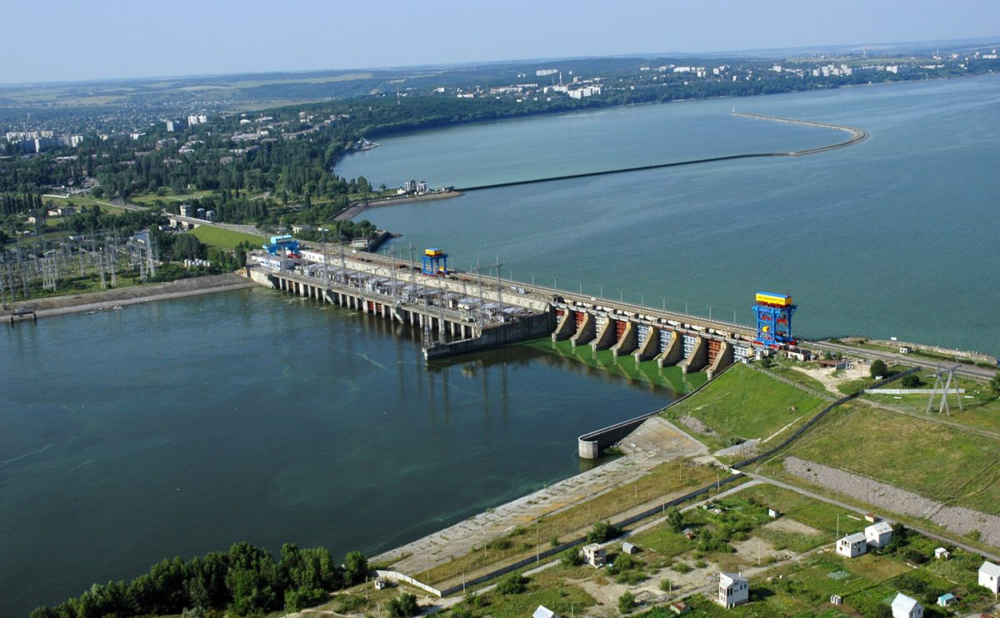
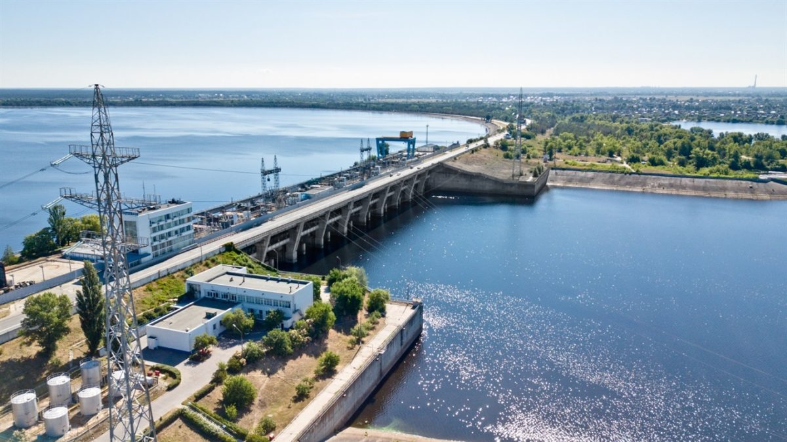
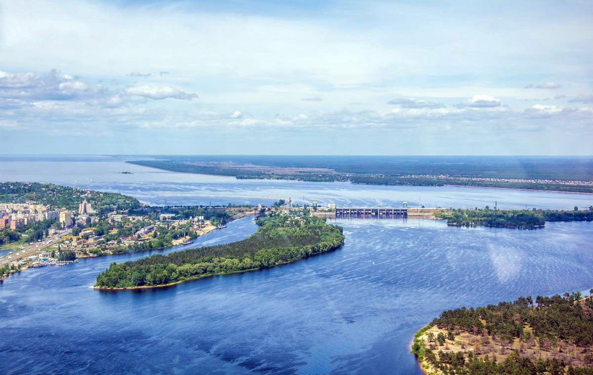
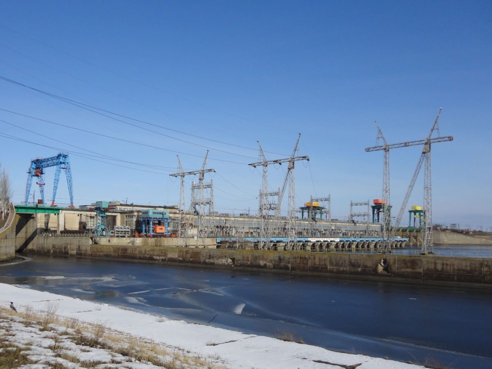
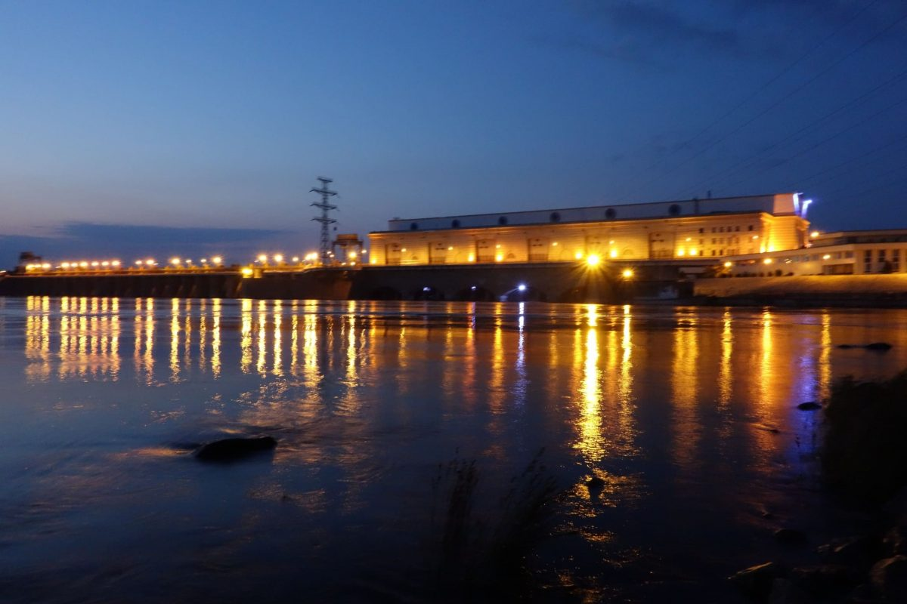

Що потрібно знати про ГЕС в Україні: скільки існує, яка найбільша та перша
В Україні виробляють електроенергію кількома шляхами: атомною енергетикою шляхом спалювання вугілля, мазуту, газу тощо. та застосуванням відновлюваних джерел енергії, зокрема вітру, сонця та води.
ГЕС - це електростанція, що виробляє електроенергію завдяки натиску води, що надходить на лопаті гідротурбіни і генератори, що приводить в дію.
Щоб гідроелектростанція працювала, потрібний перепад висоти русла річки. Для цього будують дамбу, яка також є водосховищем і дозволяє працювати ГЕС у будь-який час.
Крім того, щоб створити потрібний тиск, застосовується деривація - відведення води від русла річки каналом або системою водоводів до гідротехнічних споруд. Іноді використовують одночасно і дамбу, і деривацію.
Скільки ГЕС в Україні
В Україні є ГЕС та ГАЕС. ГЕС працює за рахунок будівництва штучної греблі на річці, а ГАЕС – за допомогою створення штучної водойми поряд з нею. В Укргідроенерго повідомляють, що в Україні десять станцій на річках Дніпро та Дністер: Київська ГЕС та Київська ГАЕС, Канівська ГЕС, Кременчуцька ГЕС, Середньодніпровська ГЕС, Дніпровська ГЕС-1 та Дніпровська ГЕС-2, Каховська ГЕС, Дністровська ГЕС та Дністерська
Найбільша ГЕС в Україні – Дніпровська (у місті Запоріжжі) потужністю 1569 МВт. Загальна потужність становить 3757,4 МВт. До речі, Дніпровська ГЕС є не лише найбільшою, а й найпершою в Україні. Її будівництво розпочали у 1927 році, а у 1932 році ввели в експлуатацію перший гідроагрегат.
Шість найпотужніших гідроелектростанцій України
Дніпровська ГЕС
Потужність – 1569 МВт
Висота греблі – 60 м
Де знаходиться – Запорізька область
ДніпроГЕС-1 є найстарішою станцією каскаду Дніпровських ГЕС (введена в експлуатацію в 1932 р.). Грандіозна гідротехнічна споруда була зведена майже без техніки, вручну: зокрема, бетон для будівництва греблі місили ногами. Умови праці були каторжними, а залишити будівництво працівники не могли. Кількість загиблих досі не відома. На будівництві одночасно працювало 63 000 будівельників. Головним консультантом будівництва першої ГЕС на Дніпрі був американець Х’ю Купер. Окрім того, всі турбіни, що встановлювалися на першу чергу електростанції також були американськими. У 1941 станцію було зруйновано радянською владою. Але німці її відбудували, поставили на ній німецькі турбіни. При відступі вони замінували ГЕС, але підриву станції вдалося не допустити. На основі Дніпрогес у Запоріжжі був створений металургійний, хімічний та машинобудівний промисловий комплекс. Зі спорудженням греблі, яка на 50 м підвищила рівень води в Дніпрі, відкрилося наскрізне судноплавство.
Кременчуцька ГЕС
Потужність – 686,4 МВт
Де знаходиться – м. Світловодськ
Кременчуцька ГЕС – другий після Дніпрогесу за величиною енергетичний гігант у Дніпровському каскаді, їй належить особливе місце у комплексному використанні енергетичних ресурсів Дніпра. Вона має найбільше на Дніпрі водосховище. Його довжина 172 км, ширина в окремих місцях досягає 40 км, а середня глибина – 6 м. У створі гідровузла ширина долини Дніпра сягає 12 км. З 1996 року почалася повна поетапна реконструкція Кременчуцької ГЕС, адже від початку введення в експлуатацію пройшло багато років, і обладнання зносилося. Щоб такий потужний промисловий елемент безперебійно працював, все обладнання повинно бути в хорошому стані.
Канівська ГЕС
Потужність – 444 МВт
Де знаходиться: Черкаська область
Канівська ГЕС – друга сходинка Дніпровського Каскаду ГЕС. Середньорічне виробництво електрики Канівською ГЕС — 972 млн кВт. год. при тиску 7,4—11 м. Енергетичне значення Канівської ГЕС визначається її встановленою потужністю, яка заміняє майже 0,5 млн кВт. потужності теплових електростанцій і зберігає 400 тис.т. вугілля, збільшує виробництво екологічної дешевої електроенергії. Канівське водосховище дозволило покращити водопостачання промислових підприємств і населених пунктів. Важливою перевагою Канівської ГЕС є відсутність шкідливих викидів у навколишнє середовище.
Київська ГЕС
Потужність – 408, 4 МВт
Де знаходиться – м. Вишгород
Київська ГЕС – це потужна гідроелектростанція, яка виробляє енергію для величезної кількості населення і підприємств. Розташована усього за кілька кілометрів від столиці, вона є першою сходинкою Дніпровського каскаду гідроелектростанцій. До складу споруд Київського гідровузла входять: окремі будівлі, бетонна водозливна гребля та 20 водозливів, судноплавний шлюз, ВРП на 110 кВ, земляні греблі та дамби, комплекс споруд ГАЕС з верховою водоймою. Під час будівництва Київської ГЕС уперше було використано низьконапірні горизонтальні капсульні гідроагрегати. Це дозволило спроєктувати споруду в поєднанні з водоскидом, і в такий спосіб відмовитися від будівництва окремої водозливної греблі.
Середньодніпровська ГЕС
Потужність – 352 МВт
Де знаходиться – м. Кам’янське
Будівництво ГЕС розпочалось в 1956 році, а на повну потужність ГЕС введена в 1964 році. Будівництвом цієї ГЕС вирішилася комплексна задача використання гідроенергетичних ресурсів ділянки Дніпра між Кременчуцькою ГЕС і Дніпровською ГЕС у м.Запоріжжя. Створено глибоководний шлях для плавання крупнотоннажних суден, що має особливо важливе значення для Дніпровських гірничо збагачувальних і металургійних комбінатів. Робота цієї гідроелектростанції необхідна для країни, оскільки тут виробляється близько 1300 млн кВт на рік. ГЕС оснащена 8 гідроагрегатами по 44000 кВт кожний, об’єднаних у чотири енергоблоки через чотири головні підвищувальні трансформатори потужністю 125 МВА кожний. Гребля ГЕС, довжиною 35 метрів, є однією з найбільших у світі й вона ж утворює одне з шести найбільших вітчизняних водосховищ.
Каховська ГЕС
Потужність – 351 МВт
Де знаходиться – Херсонська область
Каховська ГЕС входить до нижчої частини каскаду гідроелектростанцій на р. Дніпро. Утворює на річці найбільше за обсягом води Каховське водосховище. До складу Каховського гідровузла входять: будинок ГЕС, водозливна і земляна греблі, судноплавні споруди, закритий розподільчий пристрій 154 кВ. Через гідротехнічні споруди ГЕС побудовані залізничний та автомобільний переїзди. Метою будівництва Каховського гідровузла було забезпечення стійких врожаїв сільськогосподарських культур на півдні України, подальший розвиток високопродуктивного тваринництва, а також підвищення виробництва гідроелектростанції для сільського господарства і промисловості. Впровадження Каховської ГЕС покращило баланс потужності об’єднаної енергосистеми України та підвищило надійність її роботи.
Підрив Каховської ГЕС
На світанку 6 червня стало відомо про часткове руйнування дамби Каховської ГЕС. Українська влада звинуватила у підриві дамби російські окупаційні сили, які захопили і контролюють гідроелектростанцію від 24 лютого 2022 року. Російські окупаційна влада натомість стверджує, що це ЗСУ вночі обстріляли і пошкодили дамбу Каховської ГЕС. Руйнування цієї гідроспоруди, кажуть фахівці, наразило на ризик велику кількість цивільного населення і створило загрозу для системи охолодження реакторів Запорізької АЕС.